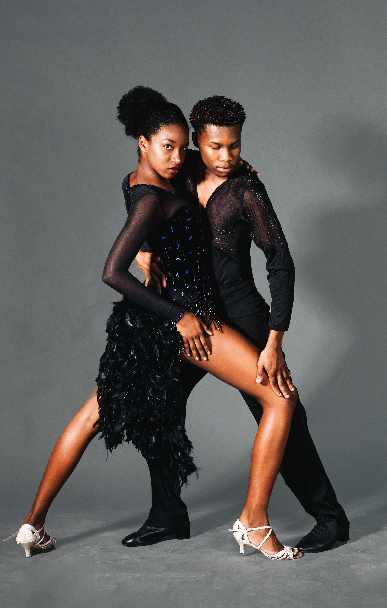

Latein ist eine Kurzform für Lateinamerikanische Tänze. Dieser Sammelbegriff fasst die
fünf Gesellschaftstänze Samba, Cha-Cha-Cha, Rumba, Paso Doble und Jive zusammen. Die
Rumba, die Samba und der Cha-Cha-Cha stammen tatsächlich aus Lateinamerika, während der Paso Doble
spanischen und der Jive nordamerikanischen Ursprungs ist.

Die Tänze werden üblicherweise als Paar getanzt und sind geprägt vom Wechsel zwischen
schnellen und langsamen Bewegungen. Vor allem Drehungen finden häufig statt. Gegenüber
den Standardtänzen stehen die Tänzer weiter auseinander und kommunizieren über
ihre Bewegungen anstatt dass diese eine Einheit bilden.
Gegenüber dem Cha-Cha-Cha und der Rumba sind Samba und Paso Doble oft fast doppelt
so viele Takte die Minute. Samba und Paso Doble werden im 2/4- und die anderen drei
im 4/4-Takt getanzt.
Anfänger: Di/Do/Sa 1900-2030
Fortgeschritten: Di/Do/Sa 2030-2200
Kursgebühr: Auf Absprache.
Ihr seit jederzeit herzlich Willkommen an einer der Termine zum schnuppern vorbei zu kommen.
Bringt Kleidung mit in der ihr euch frei bewegen könnt.